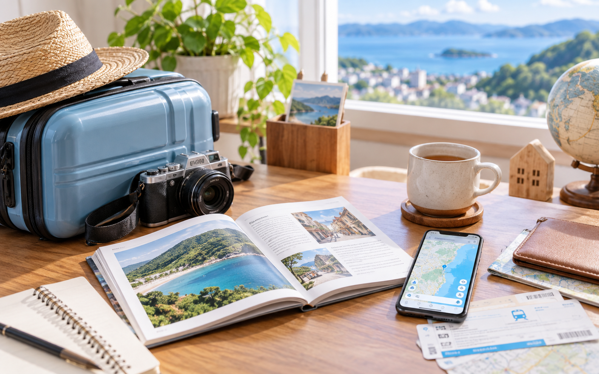

海外も探す
01agoda
国内・海外のホテルを幅広く比較したいときに。海外旅行や都市部ホテルを探す入口として使いやすい候補です。
- 海外ホテルも候補に入れやすい
- ホテル中心で検索しやすい
最新の料金・空室・条件は公式サイトでご確認ください。

TRAVEL BOOKING / PR
A8.netのアフィリエイト広告を含みます
国内旅行も海外旅行も、予約サイトごとに得意な探し方があります。行き先、宿のタイプ、キャンセル条件を見ながら、家族に合う入口を選びましょう。
QUICK PICK
国内・海外のホテルを幅広く比較したいときに。海外旅行や都市部ホテルを探す入口として使いやすい候補です。
最新の料金・空室・条件は公式サイトでご確認ください。
国内の宿を、普段使っているサービスと一緒に探したいときに。家族旅行の候補をまとめて比べたい場面に向いています。
最新の料金・空室・条件は公式サイトでご確認ください。
温泉や観光地、家族向けの宿を国内で探したいときに。宿とレジャーを一緒に検討したい人に合います。
最新の料金・空室・条件は公式サイトでご確認ください。
COMPARE
| 予約サイト | 向いている旅 | 見るポイント |
|---|---|---|
| agoda | 海外旅行、都市部ホテル、国内外をまとめて探したい旅行 | 税込価格、キャンセル条件、支払い方法、所在地 |
| Yahoo!トラベル | 国内旅行、家族旅行、普段使うサービスで宿を探したい場合 | ポイント条件、食事、部屋タイプ、子ども料金 |
| じゃらん | 温泉、観光地、国内レジャーを含めた旅行 | 口コミ、プラン内容、入湯税、現地払いの有無 |
HOW TO CHOOSE
添い寝の年齢、食事の有無、ベッド幅、子ども料金を先に見ます。
いつから料金が発生するか、変更できるかを予約前に確認します。
駅からの距離、駐車場、チェックイン時間を家族の動きに合わせます。
添い寝の年齢条件、食事の有無、ベッド幅、禁煙・喫煙、駅からの距離を先に確認すると安心です。
税・サービス料、入湯税、キャンセル料、現地払いの有無まで含めて比較してください。
このページは各予約サイトの特徴を比較して紹介するものです。実際の利用体験を示すものではありません。